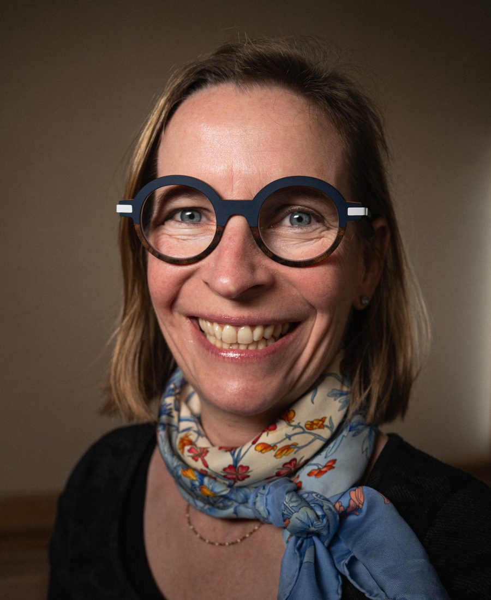

De la conception de puces
à l'alignement d'équipes.
Anne-Sophie Haumonté, ingénieure en microélectronique devenue coach de dirigeants.

Je n'ai pas commencé par le coaching.
Mes premières années d'ingénieure se passent en Californie, à concevoir des puces électroniques. Cisco, LSI Logic, puis une start-up de douze personnes à Los Angeles où l'on travaillait sept jours sur sept. Mon métier, c'était la vérification. Prendre un circuit qui ne fonctionne pas et trouver pourquoi. Trouver le défaut que personne d'autre ne trouve.
De retour en France, je rejoins Newlogic à Sophia Antipolis, racheté depuis par Wipro. Neuf ans de wifi et de bluetooth, des projets menés entre l'Inde, la France et les États-Unis, des équipes à recruter et à faire travailler ensemble malgré les fuseaux horaires et les façons de faire.
Puis le site ferme, et on me confie le reclassement. Tous les salariés retrouvent une place, deux spin-offs naissent de l'opération. C'est l'année où j'ai compris que ce que je faisais en plus de mon travail depuis dix ans, accueillir les nouveaux, désamorcer ce qui coince, remettre une équipe en marche, était un métier à part entière.
Il a fallu que quelqu'un me le dise. J'ai fait un bilan de compétences, puis un diplôme de coaching. C'était en 2011.
Depuis, j'accompagne des dirigeants et des équipes de PME industrielles et tech. Le travail est resté le même. Trouver ce qui bloque et que personne ne formule. Les systèmes sont simplement devenus humains.
Le parcours
-
1999 à 2002Californie
Ingénieure électronique
Cisco, LSI Logic, Angeles Design Systems. Conception et vérification de puces wifi, bluetooth et VoIP. Projets techniques en environnement multiculturel, entre la Silicon Valley et Los Angeles.
-
2002 à 2014Sophia Antipolis
Ingénieure puis chef de projet international
Newlogic, racheté par Wipro. Pilotage de projets entre l'Inde, la France et les États-Unis, supervision d'équipes, recrutement. À la fermeture du site, j'ai participé au reclassement de la totalité des salariés et à la création de deux spin-offs.
-
Depuis 2011Marseille
Coach et formatrice, Work and Joy
Accompagnement de dirigeants et d'équipes de PME industrielles et tech. Séminaires, diagnostics partagés, démarches QVCT, formations au management et à la conduite du changement.
-
Depuis 2007en parallèle
Enseignante en Master
Centrale Marseille, l'IFTE, La Forbine, l'ESIEE et Rocket School. Conduite du changement, ressources humaines, management, RSE.
Anne-Sophie is one of the most valuable people I have ever worked with. Not only a reliable and forward thinking leader but also an inspiring team player.
Formations et certifications
Ingénierie
Diplôme d'ingénieur, CPE Lyon
Master, Oregon State University
Coaching
Coach professionnel orienté solution, titre RNCP niveau 6, Convergence RH, 2011
Coaching d'équipe orienté solution, 2016
Management et ressources humaines
Certification management, Cegos, 2010
Certification formateur, Cegos, 2011
Bilan de compétences et Process Com, 2021
Gestion des ressources humaines, Cegos, 2024
Outils et méthodes
Psychologie sociale, Wesleyan University, 2013
TLP Navigator, 2016
Praticienne Ennéagramme, La Boétie Partners, 2023
Diagnostic Partagé, La Boétie Partners, 2025
Work and Joy est certifiée Qualiopi pour les actions de formation et les bilans de compétences, certificat QUA25030046, et membre du réseau La Boétie Partners.
Quelques entreprises accompagnées
- IT Celerator
- Yesss Électrique
- Transvalor
- Action Logement
- SNCF
- Sofitel
- TNT Telecom
- Peretti Groupe
- Alpha Découpe
Les accompagnements
Séminaire d’équipe
Une journée pour poser le cap et repartir avec un plan d’action partagé.
Accompagnement du dirigeant
Des séances régulières, quand le sujet est votre propre posture plutôt que l’équipe.
Bilan de compétences
Pour un parcours individuel, finançable par le CPF.
On en parle quinze minutes ?
Un premier échange en visio, gratuit et sans engagement, pour voir si le sujet est le bon et si on a envie de travailler ensemble.
Prendre rendez-vousOu par e-mail : contact@workandjoy.org